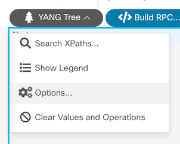
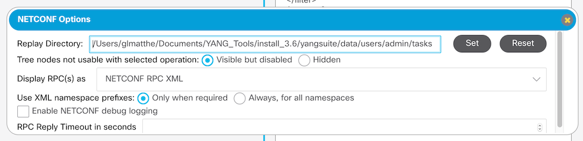
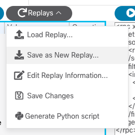
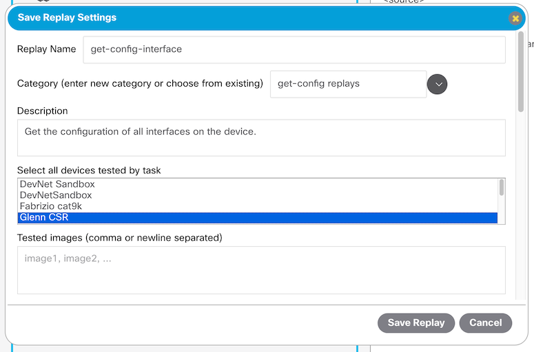
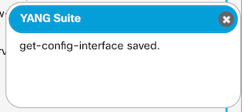
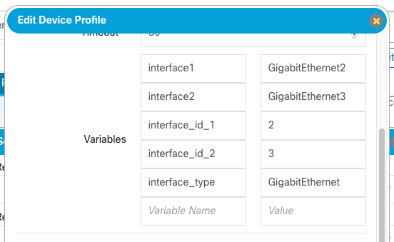
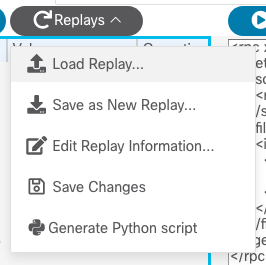
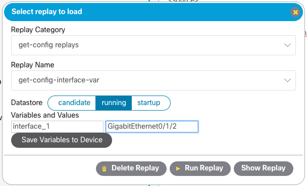
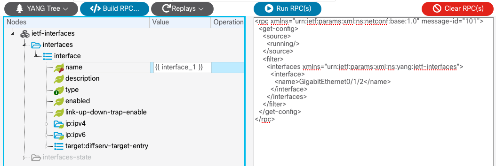
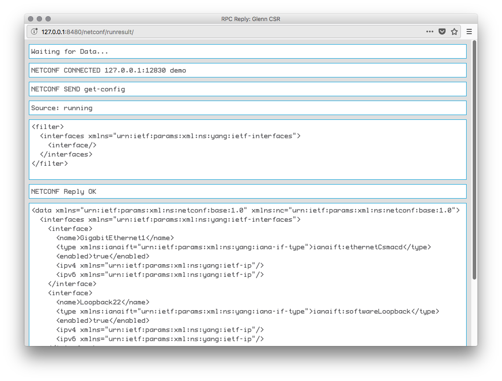

Using Replays for repeated workflows¶
You can make use of the “Replay” functionality to save and run certain RPC commands without having to go through the RPC construction process every time.
First establish where you want your replays stored. You may have some existing replays already located on the file system that YANG Suite is installed on, or, maybe you are working out of a source control workspace and you want these replays shared with others and you plan on checking them in. The default location is in the “data” directory that you first configured when you installed YANG Suite. If you need to change this, this can be done through the NETCONF “Options” dialog.
Enter the location of the directory you want to point to and click on the “Set” button. Click on the “Reset” button to move it back to the default location.
Creating Replays¶
To create a replay, let us follow the same steps as in the “Using Netconf RPCs” documentation. I will go ahead and load the “ietf-interfaces” model, and change the datastore to “running” and select the “get-config”. Click on the “Build RPC” button to create the RPC you want to save as a replay.
Next, I select “Save as New Replay…” from the “Replays” menu, which opens a dialog asking me to provide descriptive information for this replay.
 Once the replay is saved, you will get a confirmation pop-up. The replay category and replay name dropdowns will also be automatically populated with the replay that you created.
Saving Replays with Variables¶
In order to make the replay more portable, you may want to define variables
rather than fixed values for some leaves. A very common example is interface
names and numbers; for example, the test device you developed the replay on
used the replay to configure interface GigabitEthernet2, but you want to be able
to use this replay on another Cisco device which instead needs to configure
interface GigabitEthernet0/1/2. The solution here is variables! A variable
can be referenced by using the syntax {{ variable_name }} anywhere in
an RPC; here, you might want to use {{ interface_1 }} as your variable.
Go ahead and save this replay. Later, when you load the replay, you will be prompted to supply a value for this variable.
Because variable values are often device-specific (again, such as interface identifiers), you can save variable values to each device profile, either by using the device “Edit…” button in the main GUI, or by selecting “Save Variables to Device” from the “Load Replay” dialog, as described below.
Loading and Editing Saved Replays¶
To see a saved replay later, select the “Load Replay” menu item, select the category and name from the dropdowns in the resulting dialog, then click on “Show Replay” to see the saved RPCs loaded and displayed.
 Note that if this replay contains variables, this dialog will list the variables defined in this replay and prompt you to input values for these variables. If your selected device profile has defined values, they will be displayed here as the default values for these variables. You can edit the values as needed, and use the “Save Variables to Device” button to save them as the new device-specific default values.
When done, click “Show Replay” button in order to load it into the UI. Note that the tree-grid on the left side of the UI will still show the actual variable name, while the RPC XML on the right side will make use of the variable values.
Once you have loaded a replay into the UI, you can use the “Edit Replay Information…” menu item to change the properties of this replay (such as its description, list of devices tested, etc.).
You can also click “Clear RPC(s)”, build new RPCs using the usual interface, and then select the “Save Changes” menu item in order to update the existing replay file with new RPC contents.
Running Replays¶
After loading a saved replay, you can use “Run RPC(s)” as usual to run the replay RPCs. Alternatively, as a shortcut, from the “Load Replay” dialog, you can click on “Run Replay” to run the replay directly without needing to load it into the UI.
In either case you will see a pop-up window that displays the RPC communication and the response from the device.
You can use the “Delete Replay” button to remove the replay from the list.